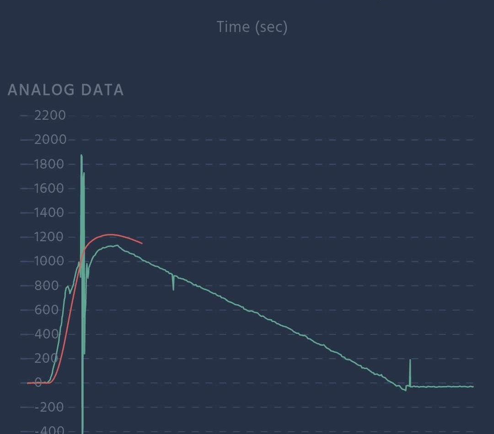
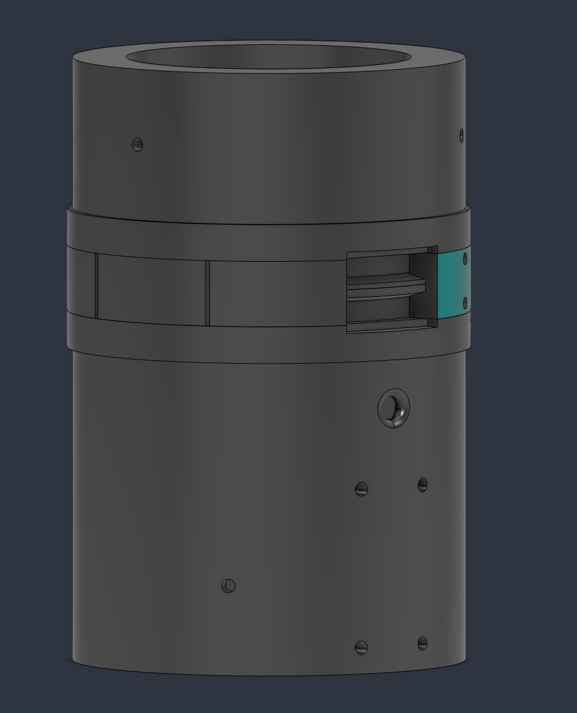
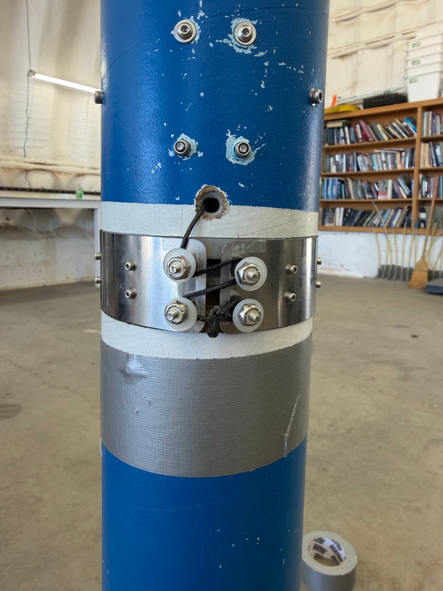

Two Stage Rocket
Launched a 9.4-foot two-stage rocket. Stages separate in flight via a Marman clamp mechanism, and the vehicle surpassed its simulated apogee prediction by 1.8× on its first flight.
Flight, October 17, 2026
The rocket flew on October 17, 2026 and reached an apogee of 1877 ft, 1.8 times the altitude predicted by the pre-flight simulations. The stages separated as planned, and all sections were recovered.
Apogee

Two stage design
The two stages are held together by a Marman clamp, a split-ring band fastener that releases under a pyrotechnic charge. The stages separate in flight without a large lateral impulse to either section.
The Marman clamp keeps both stages stacked as one assembly on the pad and separates them at altitude. Compared with shear pins or rail-based separation, the band clamp is more compact and repeatable. The interface between the stages is rigid enough to survive ignition loads and still releases on command.

